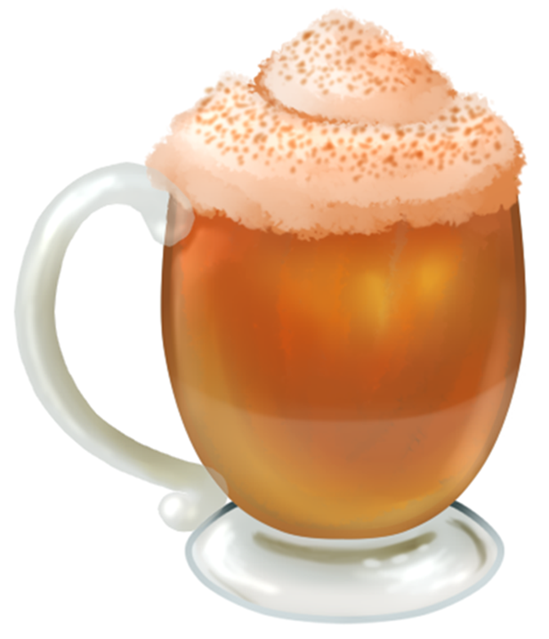
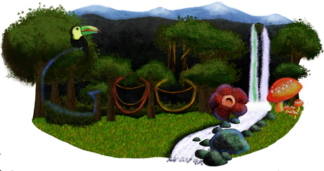
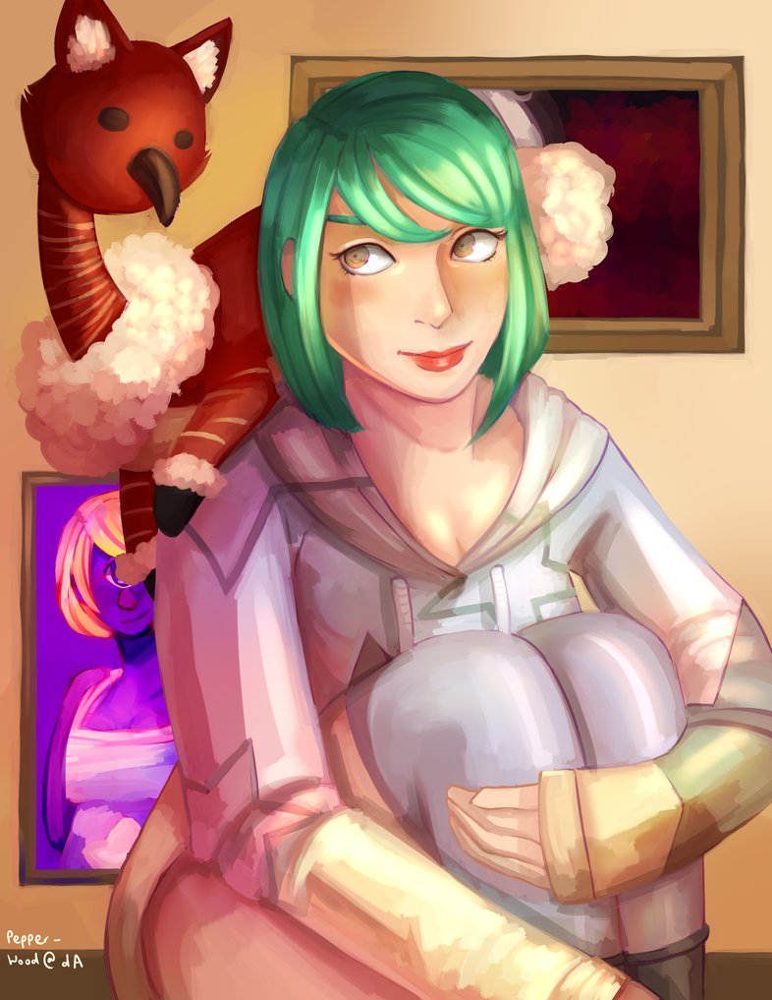
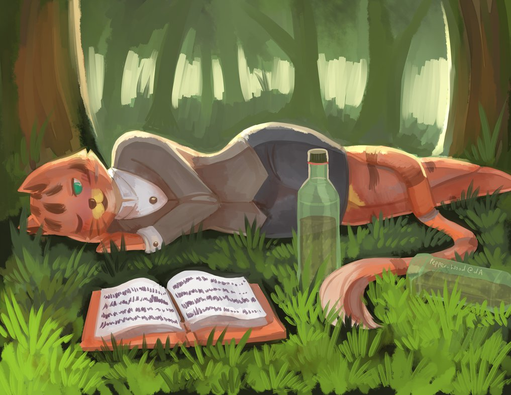
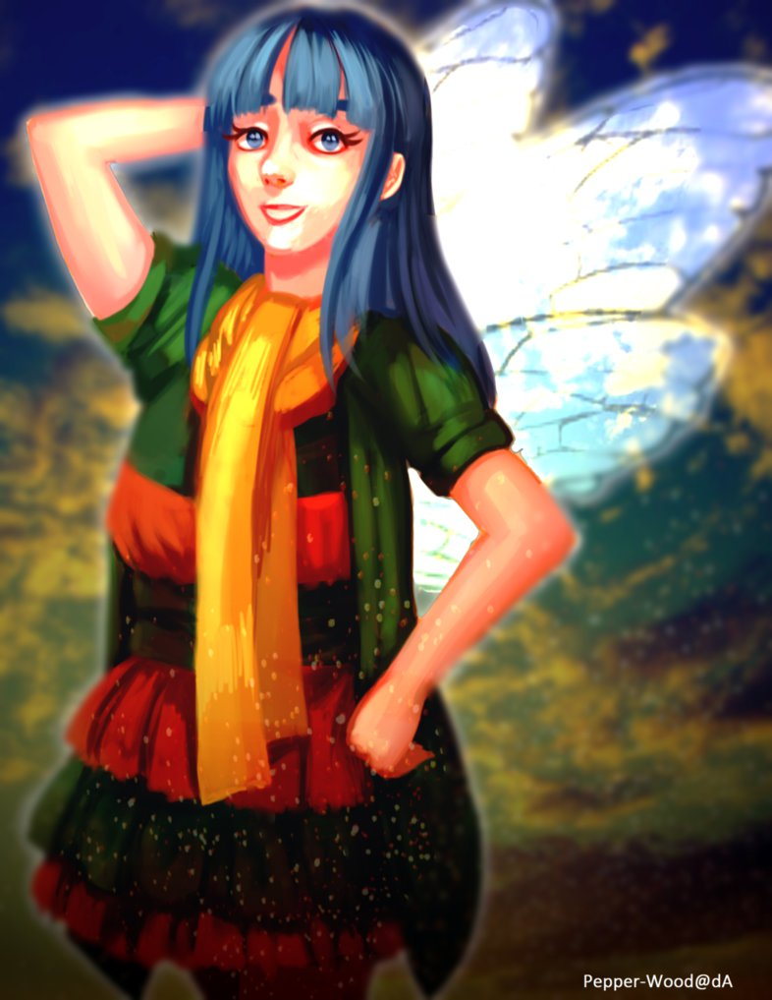
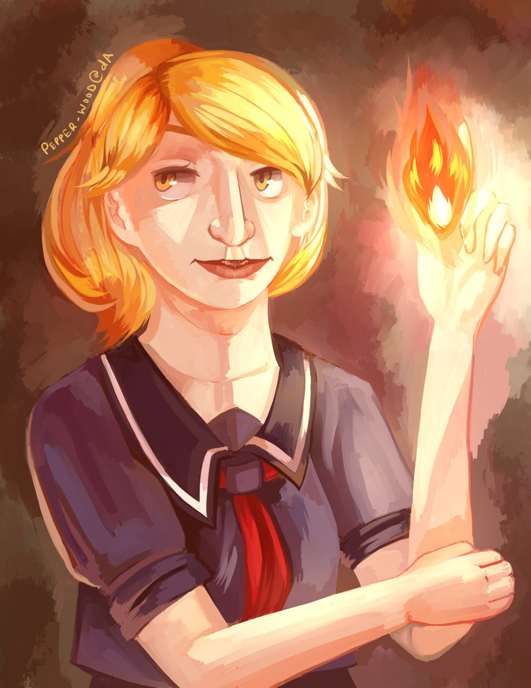
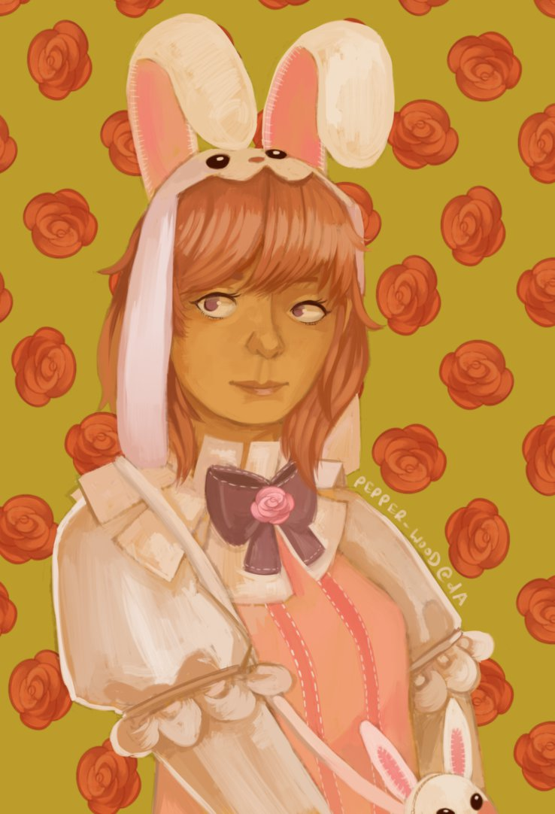
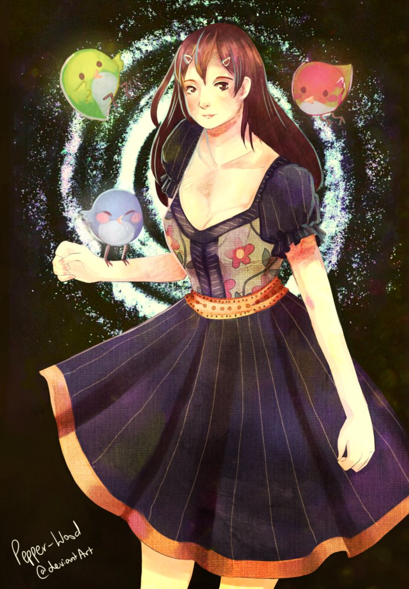
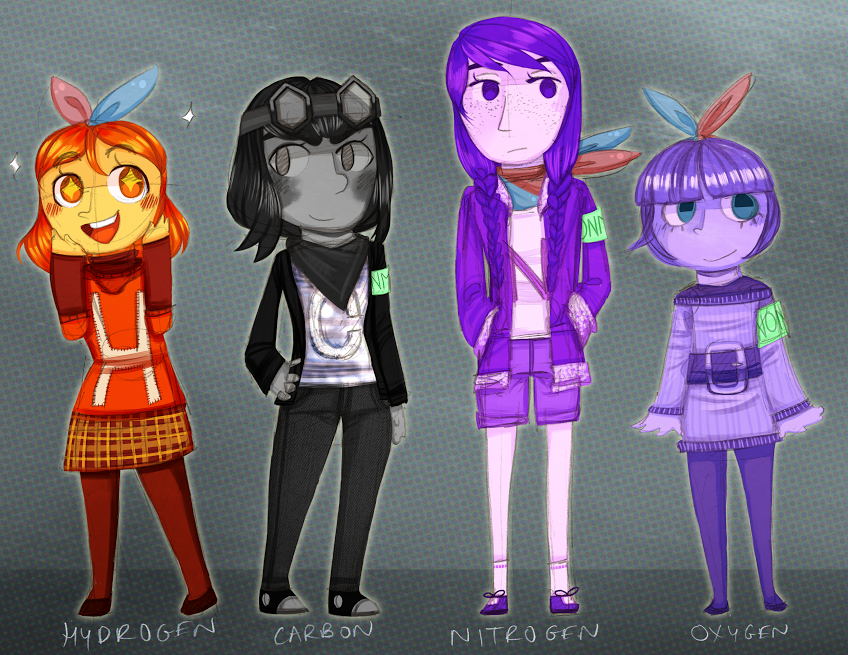

Select one of the headers below to jump to that section.
| Graphics and Graphic Design |
| Digital Portraits |
| Landscapes |
Graphics and Graphic Design
 |
Genericon T-Shirt DesignFebruary 2015 - Modified draft t-shirt design for Genericon XVIII, representing the themes of Video Games, Anime, and Sci-Fi. The design would be printed in black ink on a color t-shirt. |
Tiled Background ProjectFebruary 2015 - Original grayscale draft t-shirt design for Genericon XVIII, representing the themes of Video Games, Anime, and Sci-Fi. |
 |
|  | Pumpkin Spice LatteNovember 2012 - A design for my high school newspaper where a graphic of a pumpkin spiced latte was requested. |
Genericon XVIII Cover EntryFebruary 2015 - Collaboration with Darien Keyack for proposed cover art for Genericon XVIII, representing the themes of Video Games, Anime, and Sci-Fi. |
 |
 |
Doodle4Google 2012January 2012 - Entry for Google's 2012 Doodle4Google contest. |
Doodle4Google 2010January 2010 - Entry for Google's 2010 Doodle4Google contest. This was one of my first full, detailed compositions using a digital art tablet. |
 |
Digital Portraits
|  | Portrait of TsunamiAugust 2015 - Painting of someone else's character. This was a portrait practice with pose and lighting. |
Portrait of YinAugust 2015 - Painting of someone else's character. This was a portrait practice with backlighting and grass textures to create ambience. |
 |
|  | Portrait of KamiOctober 2015 - Painting of someone else's character. This was a protrait practice with more realistic faces and clothing folds. |
Portrait of ErynnJuly 2015 - Painting of someone else's character; practicing making more realistic character portraits and playing with lights and shadows. |
 |
|  | Portrait of NelaJune 2015 - Painting of someone else's character; practicing making realistic character portraits. |
Portrait of MarMarch 2015 - Painting of someone else's character. This was a fun paining to play with colors and color harmony. |
 |
|  | Periodic Table of Elements CharactersMay 2014 - Characters for a future comic/children's book series featuring the human personifications of the elements of the periodic table. Various aspects of their designs represent different qualities each element possesses, suchas the headbands signifying diatomic elements and armbands color-coded according to category. In this case, all four characters fall under non-metals and have the same armband. |
Portrait of KonekoDecember 2014 - Painting of someone else's character in which I practiced with water reflections and other related effects. |
 |
 |
AmiDecember 2014 - Portrait of a friend's character to practice with backgrounds and mood lighting. |
Donatogaru #3August 2014 - Portrait of my character "Donatogaru" to practice with monochromatic shading and face composition. |
 |
 |
Donatogaru #2July 2014 - Composition of my character "Donatogaru" with a focus on backlighting. |
Donatogaru #1May 2014 - Composition of my character "Donatogaru" with a focus on playing with colors and various other elements likethe jellyfish andbubbles. |
 |
 |
MNGoKKL - Static VersionComposition of my character "MNGoKKL" heavily inspired by Japanese pop art and having fun with color palettes to achieve different effects. |
MNGoKKL - GIF VersionComposition of my character "MNGoKKL" heavily inspired by Japanese pop art and having fun with color palettes to achieve different effects. This is the gif version of the prior piece. |
 |
Landscapes
 |
Susie's HouseJuly 2013 - Painting of my neighbor's house as a birthday present. |